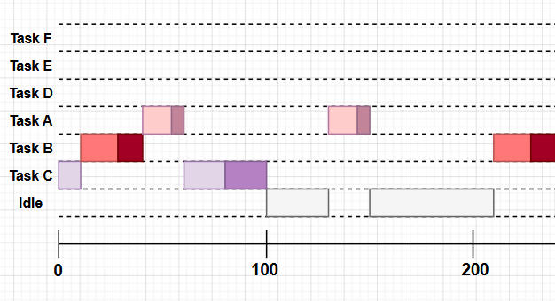
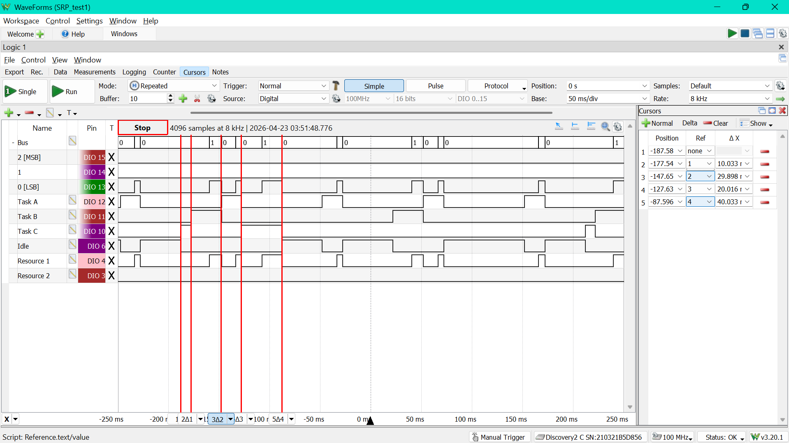
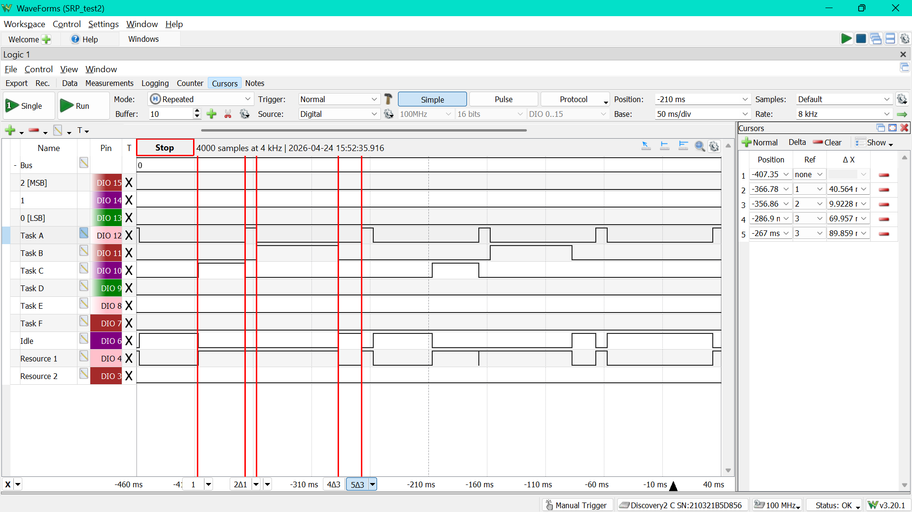
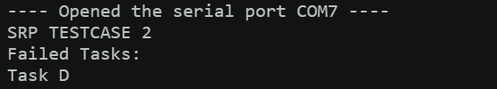
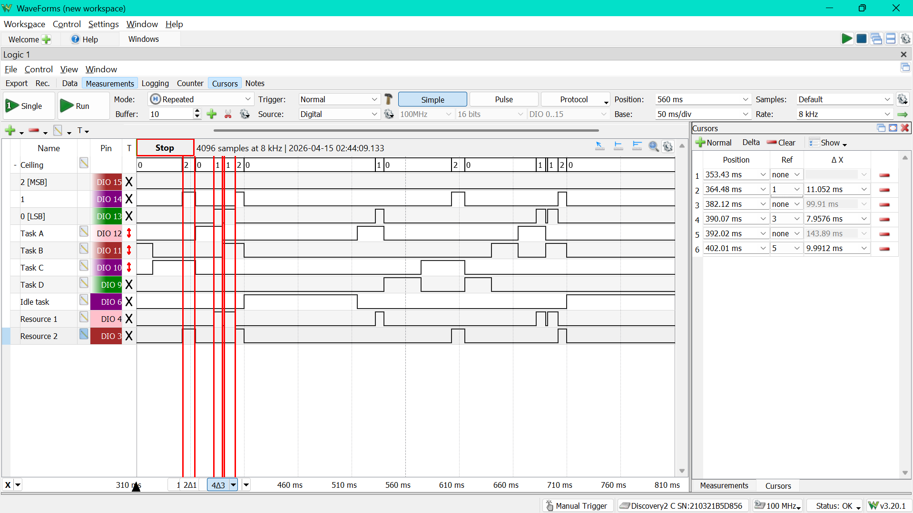
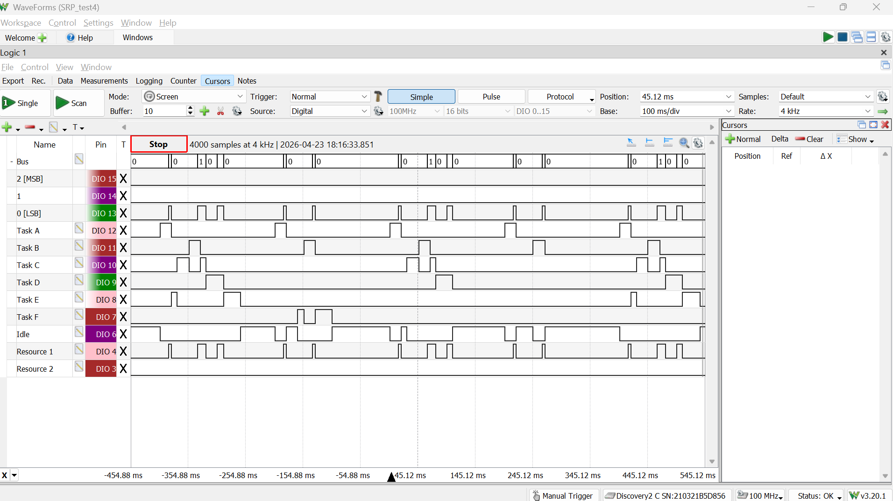
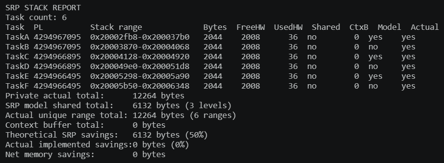
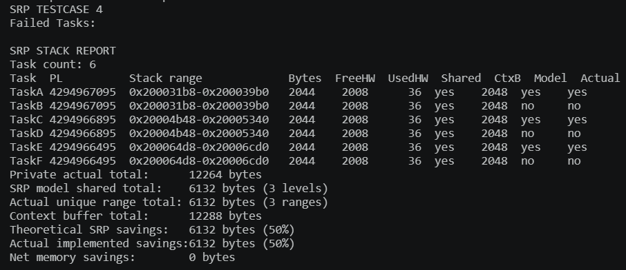
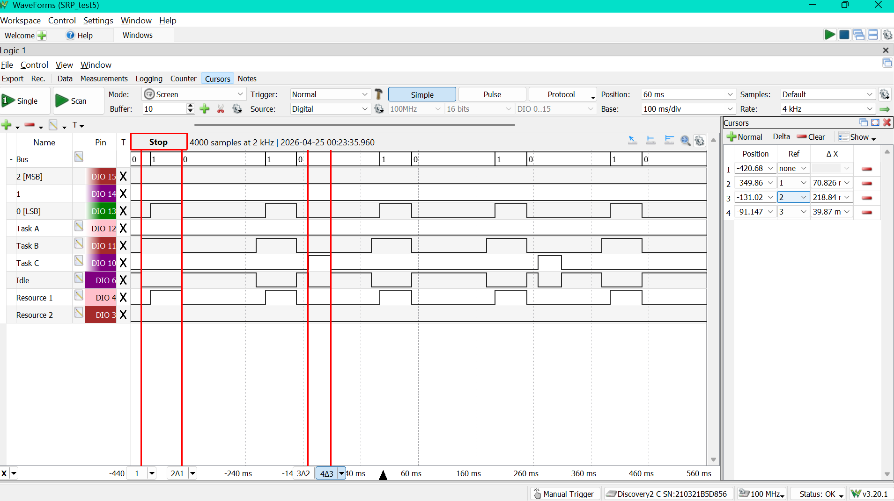

SRP Testing
Testing Procedure
All tests were conducted in \Demo\ThirdParty\Community-Supported-Demos\CORTEX_M0_RP2040\Standard\main.c, in \Standard there is a file called srp_demo.c which is called by main and controls which test case is run by setting a variable called TESTCASE (also defined in srp_demo.c).
It covers the following test cases which will also be shown here:
- Basic Implicit Deadline w/ 1 Shared Resource
- Admission Control w/ SRP blocking time
- 2 Shared Resources
- Stack-sharing
- Constrained Deadline Admission Control
- 100 Task testcase (stack-sharing gains)
The testing was conducted using the logic analyzer of an Analog Discovery 2 and also by printing messages to the serial monitor. I would use the logic analyzer to keep track of gpio pins for tasks running, as well as resource usage.
For example, I used three GPIO pins to make a binary bus that could track the system ceiling up to 7 resources being used (but admittedly, I never went past 2 resources because I did not want to schedule that by hand)
Disclaimer: I would use cursors along the time base of the logic analyzer to measure timing (they're not perfectly accurate since you drag them by hand, but they still give a good view of the timing)
Testing
Also the tasks are designed so the critical section for each job is always placed at the end (so the jobs always first run their non-critical section, then use the shared resource for the last bit) All the timing numbers are in ms, unless stated otherwise.
Test Case 1: Implicit Deadline w/ 1 Shared Resource
Task Configuration
| Task | C | T | D |
|---|---|---|---|
| τA | 20 | 100 | 100 |
| τB | 30 | 200 | 200 |
| τC | 50 | 400 | 400 |
This test just checks if the SRP implementation is properly applying the locking function and ceiling level to prevent another "higher-priority" task from preempting a lower-priority task while it is using a shared resource.
Theoretical Timing Diagram (up to 240 ms)

Expected Scheduling
| Time (ms) | What happens | Why |
|---|---|---|
| 0 - 10 | Task C runs | C is the only task released at time 0. A and B are still waiting on their startup offsets. |
| 10 - 28 | Task B runs | B is released at 10 ms and has an earlier deadline than C, so EDF switches to B. |
| 28 - 40 | Task B holds resource 1 | B has reached its critical section. The system ceiling rises here, so when A is released at 30 ms it still cannot start |
| 40 - 60 | Task A runs | Once B finishes and drops the resource, A has the earliest deadline in the ready set. |
| 60 - 100 | Task C finishes its first job | A is done, so C comes back. It finishes the rest of its non-critical work and then spends its last 20 ms in resource 1. |
| 100 - 130 | Idle | The first round of jobs is done and nothing else has been released yet. |
| 130 - 150 | Task A runs again | A's next period arrives before B or C release another job. |
| 150 - 210 | Idle | After A finishes, the system waits for B's next release. |
| 210 - 240 | Task B runs again | B's second job starts at 210 ms. A is released at 230 ms, but B is already in its shared section by then, so A has to wait. |
| 240 - 260 | Task A runs | As soon as B lets go of resource 1, A becomes the earliest ready task again. |
| after that | Same pattern repeats | A keeps getting the earlier deadline, but SRP still stops it from cutting into B or C while they are inside resource 1. |
Actual Timing Diagram

Matches the theoretical diagram and the expected schedule! The resource is also being used when expected
Test Case 2: Admission Control
Set config_USE_ADMISSION_CONTROL = 1
Task Configuration
| Task | C | T | D | U |
|---|---|---|---|---|
| τA | 10 | 100 | 100 | 10/100 = 0.10 |
| τB | 70 | 200 | 200 | 70/200 = 0.35 |
| τC | 40 | 400 | 400 | 40/400 = 0.10 |
| τD | 50 | 200 | 200 | 50/200 = 0.25 |
(Di=Ti for all i)
Total Utilization Bound: \( U = 0.80 \leq 1, \) so under EDF the task set should be schedulable. But when including the SRP blocking term, RESOURCE_1_BLOCKING = 80ms, we have to add 80s. At t = 200ms, we need to admit two jobs of task A, one job of task B, and one job of task D:
So admission fails and task D cannot run.
I expect to see that Task D fails to be scheduled.
Actual Timing Diagram

Serial Monitor Log

Observations: Task D is indeed not running and confirmed to be rejected.
Test Case 3: 2 Shared Resources
This test checks that SRP locking and the system ceiling works properly when there is more than one shared resource.
Task Configuration
| Task | C | T | D |
|---|---|---|---|
| τA | 25 | 150 | 150 |
| τB | 40 | 250 | 250 |
| τC | 45 | 300 | 300 |
| τD | 60 | 600 | 600 |
There are two registered resources in this test:
RESOURCE_1_CEILING = 150ms,RESOURCE_1_BLOCKING = 10mswith ceiling 1RESOURCE_2_CEILING = 250ms,RESOURCE_2_BLOCKING = 12mswith ceiling 2
Task A uses resource 1, task B uses resource 2, and task C uses both resources in the same job.
I expect to see:
- pin 4 go high whenever resource 1 is being held
- pin 3 go high whenever resource 2 is being held
- the ceiling bus value should go up to 2, since there are now 2 resources
- the ceiling level return to the correct value after a resource is released instead of getting stuck
Task D does not use any shared resource, so it is mainly there as a normal EDF task in the background.
Expected Scheduling
| Time (ms) | What happens | Why |
|---|---|---|
| 0 - 28 | Task B runs | B and D are ready at time 0, and B has the earlier deadline. A and C are still in their startup offsets. |
| 28 - 40 | Task B holds resource 2 | B reaches its shared section, so resource 2 goes high and the ceiling pins should show 010. |
| 40 - 65 | Task A runs | A is released at 40 ms and now has the earliest deadline. Its last 8 ms are in resource 1, so the ceiling should switch to 001 there. |
| 65 - 102 | Task C runs, then takes resource 1 | C is next in line. It does its non-critical work first, then resource 1 goes high for the first shared section. |
| 102 - 110 | Task C takes resource 2 | C has finished with resource 1 and moves straight into its second shared section, so the ceiling changes from 001 to 010. |
| 110 - 170 | Task D runs | D does not use any shared resource, so it fills the gap once the first jobs of A, B, and C are done. |
| 170 - 190 | Idle | Nothing is ready again until A's second release. |
| 190 - 215 | Task A runs again | A's next job arrives before B or C release their second jobs. |
| 250 - 290 | Task B runs again | B's second job should show the same resource-2 pattern as the first one. |
| 320 - 340 | Task C starts, then gets preempted by A | C begins its second job, but A is released at 340 ms with the earlier deadline, so C is cut off before it reaches a resource. |
| 340 - 365 | Task A runs | A takes over because its deadline is now earlier than C's |
| 365 - 390 | Task C finishes both shared sections | After A finishes, C comes back, uses resource 1 and then resource 2, and the ceiling pins should step through 001 and 010 again. |
| after that | Same idea keeps repeating |
Actual Timing Diagram

The actual measured schedule matches my hypothetical one!
Test Case 4: Stack-sharing
Task Configuration
| Task | C | T | D |
|---|---|---|---|
| τA | 20 | 200 | 200 |
| τB | 20 | 200 | 200 |
| τC | 30 | 400 | 400 |
| τD | 30 | 400 | 400 |
| τE | 40 | 800 | 800 |
| τF | 40 | 800 | 800 |
This test is set up so that there are three pairs of tasks with the same deadline:
- τA and τB
- τC and τD
- τE and τF
Since SRP computes preemption level from the relative deadline, each of those pairs ends up with the same preemption level. That is what makes this the stack-sharing testcase.
The main test output to see is the printed stack report, not just the GPIO pins. The report should show that there are fewer unique preemption levels than total tasks.
If configUSE_STACK_SHARING = 1, I expect the report to show:
- the same preemption level for each pair listed above
- shared-stack usage for those tasks
- fewer actual unique stack ranges than total tasks
If configUSE_STACK_SHARING = 0, then this testcase still gives the right stack-sharing task set, but the report will only show the theoretical grouping by preemption level and not actual shared stack ranges.
At runtime, the GPIO pins should still just look like normal SRP execution with one shared resource. So this testcase is more about the stack report than about a special scheduling pattern on the logic analyzer.
Actual Timing Diagram

This is the same whether or not stack sharing is enabled.
Serial monitor stack report for no stack sharing

Serial monitor stack report with stack sharing enabled

Quick guide to the stack report
PLis the SRP preemption level. Tasks with the same deadline should end up with the samePLStack rangeis the live execution-stack address range that task is usingBytesis just the size of that stack rangeFreeHWis the stack high-water free space, so how much of the stack still looks unusedUsedHWis the opposite: how much of that stack has actually been touchedSharedtells you whether that task is using the shared-stack path or notCtxBis the size of that task's saved stack-image buffer. This is why stack sharing in my implementation doesn't automatically mean net RAM savingsModelmeans "this task introduces a new theoretical preemption-level bucket"Actualmeans "this task introduces a new actual live stack range"
The summary numbers at the bottom are the IMPORTANT ones:
Private actual total= what all the stacks would cost if every task had its own execution stackSRP model shared total= the idealized total if you only count one live stack per preemption levelActual unique range total= how much live execution-stack space is really being used in this implementationContext buffer total= all the private saved stack-image buffers added togetherTheoretical SRP savings= the nice on-paper stack-sharing winActual implemented savings= the reduction in live execution-stack rangesNet memory savings= what is left after counting the context buffers too
So between the stack reports for when stack sharing is not enabled vs when it is enabled, you can clearly see how the Actual implemented savings is half the previous live-execution space. This makes sense since half the tasks are sharing preemption level and can share stack with the other half. Thus stack sharing is successfully reducing the sapce the live execution stack uses.
Test Case 5: Failing a task because its constrainted deadline exceeds PDA bound
Set config_USE_ADMISSION_CONTROL = 1
Task Configuration
| Task | C | T | D | U |
|---|---|---|---|---|
| τA | 10 | 100 | 60 | 10/100 = 0.10 |
| τB | 70 | 200 | 200 | 70/200 = 0.35 |
| τC | 40 | 400 | 400 | 40/400 = 0.10 |
This testcase differs from Test Case 2 in that task A now has a constrained, not implicit, deadline:
The shared resource is registered with RESOURCE_1_BLOCKING = 55ms, so for task A the first PDA check already fails:
So task A should be rejected immediately by admission control, even before worrying about the rest of the task set.
I expect to see that
- during the 2 second latch window, task A's GPIO should stay low
- task B and task C should still go high
- the serial monitor should show task A under failed tasks
This testcase shows the SRP blocking term directly affecting a constrained-deadline task instead of just pushing a larger implicit-deadline task SET over the edge.
Actual Timing Diagram

As can be seen, Task A's gpio pin never goes high; Task A never runs because it's not scheduleable.
Test Case 6: 100 Task testcase
Set TESTCASE = 6
This testcase is a stress test for SRP, with srp_demo.c creating configMAX_TASKS = 100 identical tasks in a loop.
T000,T001, ...,T099
All 100 tasks have the same timing parameters:
- period =
1000ms - deadline =
1000ms - execution time =
5ms - first critical section =
1ms - shared resource =
RESOURCE_1
Task Configuration
| Task | C | T | D |
|---|---|---|---|
| τi | 5 | 1000 | 1000 |
where i ranges from 1 to 100, for each of the 100 test cases.
The shared resource is also registered with:
RESOURCE_1_CEILING = 1000msRESOURCE_1_BLOCKING = 1ms
So each task only spends a very short amount of its execution inside the shared resource, but SRP's semaphore path is still being used.
Since each task contributes
the full 100-task set has total utilization
Even if we include the SRP blocking term of 1ms, the demand is still comfortably below the deadline window, so I expect all 100 tasks to be admitted.
This testcase checks
- that the kernel can create and admit 100 SRP tasks without breaking
- that SRP locking still works when a lot of tasks all share the same resource
The serial monitor should print:
Task creation time = ... usCreated 100/100 tasksAll stress tasks admitted.- an
SRP STACK REPORTshowing the stack totals and savings for the full 100-task set
The task GPIOs are not used in this testcase, but pin 4 (RESOURCE_1), still works.
The useful GPIOs in this testcase are:
- pin 4, which should still pulse when
RESOURCE_1is held - the ceiling pins, which should still show the resource-1 ceiling when the critical section is active
The stack report in the serial monitor shows the stack-sharing gains. Since all 100 tasks have the same deadline, they also all have the same preemption level, so:
- the theoretical SRP model should collapse the whole set down to one shared stack level
- if
configUSE_STACK_SHARING = 1, the actual unique stack range total should also become significantly smaller - if
configUSE_STACK_SHARING = 0, the report will still show the theoretical savings, but the actual implemented savings will still be 0
Serial Monitor Message for no stack sharing
SRP TESTCASE 6
Failed Tasks:
Task creation time = 88968 us
Created 100/100 tasks
SRP STACK REPORT
Task count: 100
Task PL Stack range Bytes FreeHW UsedHW Shared CtxB Model Actual
T000 4294966295 0x200035f8-0x200039f0 1020 984 36 no 0 yes yes
T001 4294966295 0x20003aa0-0x20003e98 1020 984 36 no 0 no yes
T002 4294966295 0x20003f48-0x20004340 1020 984 36 no 0 no yes
T003 4294966295 0x200043f0-0x200047e8 1020 984 36 no 0 no yes
T004 4294966295 0x20004898-0x20004c90 1020 984 36 no 0 no yes
T005 4294966295 0x20004d40-0x20005138 1020 984 36 no 0 no yes
T006 4294966295 0x200051e8-0x200055e0 1020 984 36 no 0 no yes
T007 4294966295 0x20005690-0x20005a88 1020 984 36 no 0 no yes
T008 4294966295 0x20005b38-0x20005f30 1020 984 36 no 0 no yes
T009 4294966295 0x20005fe0-0x200063d8 1020 984 36 no 0 no yes
T010 4294966295 0x20006488-0x20006880 1020 984 36 no 0 no yes
T011 4294966295 0x20006930-0x20006d28 1020 984 36 no 0 no yes
T012 4294966295 0x20006dd8-0x200071d0 1020 984 36 no 0 no yes
T013 4294966295 0x20007280-0x20007678 1020 984 36 no 0 no yes
T014 4294966295 0x20007728-0x20007b20 1020 984 36 no 0 no yes
T015 4294966295 0x20007bd0-0x20007fc8 1020 984 36 no 0 no yes
T016 4294966295 0x20008078-0x20008470 1020 984 36 no 0 no yes
T017 4294966295 0x20008520-0x20008918 1020 984 36 no 0 no yes
T018 4294966295 0x200089c8-0x20008dc0 1020 984 36 no 0 no yes
T019 4294966295 0x20008e70-0x20009268 1020 984 36 no 0 no yes
T020 4294966295 0x20009318-0x20009710 1020 984 36 no 0 no yes
T021 4294966295 0x200097c0-0x20009bb8 1020 984 36 no 0 no yes
T022 4294966295 0x20009c68-0x2000a060 1020 984 36 no 0 no yes
T023 4294966295 0x2000a110-0x2000a508 1020 984 36 no 0 no yes
T024 4294966295 0x2000a5b8-0x2000a9b0 1020 984 36 no 0 no yes
T025 4294966295 0x2000aa60-0x2000ae58 1020 984 36 no 0 no yes
T026 4294966295 0x2000af08-0x2000b300 1020 984 36 no 0 no yes
T027 4294966295 0x2000b3b0-0x2000b7a8 1020 984 36 no 0 no yes
T028 4294966295 0x2000b858-0x2000bc50 1020 984 36 no 0 no yes
T029 4294966295 0x2000bd00-0x2000c0f8 1020 984 36 no 0 no yes
T030 4294966295 0x2000c1a8-0x2000c5a0 1020 984 36 no 0 no yes
T031 4294966295 0x2000c650-0x2000ca48 1020 984 36 no 0 no yes
T032 4294966295 0x2000caf8-0x2000cef0 1020 984 36 no 0 no yes
T033 4294966295 0x2000cfa0-0x2000d398 1020 984 36 no 0 no yes
T034 4294966295 0x2000d448-0x2000d840 1020 984 36 no 0 no yes
T035 4294966295 0x2000d8f0-0x2000dce8 1020 984 36 no 0 no yes
T036 4294966295 0x2000dd98-0x2000e190 1020 984 36 no 0 no yes
T037 4294966295 0x2000e240-0x2000e638 1020 984 36 no 0 no yes
T038 4294966295 0x2000e6e8-0x2000eae0 1020 984 36 no 0 no yes
T039 4294966295 0x2000eb90-0x2000ef88 1020 984 36 no 0 no yes
T040 4294966295 0x2000f038-0x2000f430 1020 984 36 no 0 no yes
T041 4294966295 0x2000f4e0-0x2000f8d8 1020 984 36 no 0 no yes
T042 4294966295 0x2000f988-0x2000fd80 1020 984 36 no 0 no yes
T043 4294966295 0x2000fe30-0x20010228 1020 984 36 no 0 no yes
T044 4294966295 0x200102d8-0x200106d0 1020 984 36 no 0 no yes
T045 4294966295 0x20010780-0x20010b78 1020 984 36 no 0 no yes
T046 4294966295 0x20010c28-0x20011020 1020 984 36 no 0 no yes
T047 4294966295 0x200110d0-0x200114c8 1020 984 36 no 0 no yes
T048 4294966295 0x20011578-0x20011970 1020 984 36 no 0 no yes
T049 4294966295 0x20011a20-0x20011e18 1020 984 36 no 0 no yes
T050 4294966295 0x20011ec8-0x200122c0 1020 984 36 no 0 no yes
T051 4294966295 0x20012370-0x20012768 1020 984 36 no 0 no yes
T052 4294966295 0x20012818-0x20012c10 1020 984 36 no 0 no yes
T053 4294966295 0x20012cc0-0x200130b8 1020 984 36 no 0 no yes
T054 4294966295 0x20013168-0x20013560 1020 984 36 no 0 no yes
T055 4294966295 0x20013610-0x20013a08 1020 984 36 no 0 no yes
T056 4294966295 0x20013ab8-0x20013eb0 1020 984 36 no 0 no yes
T057 4294966295 0x20013f60-0x20014358 1020 984 36 no 0 no yes
T058 4294966295 0x20014408-0x20014800 1020 984 36 no 0 no yes
T059 4294966295 0x200148b0-0x20014ca8 1020 984 36 no 0 no yes
T060 4294966295 0x20014d58-0x20015150 1020 984 36 no 0 no yes
T061 4294966295 0x20015200-0x200155f8 1020 984 36 no 0 no yes
T062 4294966295 0x200156a8-0x20015aa0 1020 984 36 no 0 no yes
T063 4294966295 0x20015b50-0x20015f48 1020 984 36 no 0 no yes
T064 4294966295 0x20015ff8-0x200163f0 1020 984 36 no 0 no yes
T065 4294966295 0x200164a0-0x20016898 1020 984 36 no 0 no yes
T066 4294966295 0x20016948-0x20016d40 1020 984 36 no 0 no yes
T067 4294966295 0x20016df0-0x200171e8 1020 984 36 no 0 no yes
T068 4294966295 0x20017298-0x20017690 1020 984 36 no 0 no yes
T069 4294966295 0x20017740-0x20017b38 1020 984 36 no 0 no yes
T070 4294966295 0x20017be8-0x20017fe0 1020 984 36 no 0 no yes
T071 4294966295 0x20018090-0x20018488 1020 984 36 no 0 no yes
T072 4294966295 0x20018538-0x20018930 1020 984 36 no 0 no yes
T073 4294966295 0x200189e0-0x20018dd8 1020 984 36 no 0 no yes
T074 4294966295 0x20018e88-0x20019280 1020 984 36 no 0 no yes
T075 4294966295 0x20019330-0x20019728 1020 984 36 no 0 no yes
T076 4294966295 0x200197d8-0x20019bd0 1020 984 36 no 0 no yes
T077 4294966295 0x20019c80-0x2001a078 1020 984 36 no 0 no yes
T078 4294966295 0x2001a128-0x2001a520 1020 984 36 no 0 no yes
T079 4294966295 0x2001a5d0-0x2001a9c8 1020 984 36 no 0 no yes
T080 4294966295 0x2001aa78-0x2001ae70 1020 984 36 no 0 no yes
T081 4294966295 0x2001af20-0x2001b318 1020 984 36 no 0 no yes
T082 4294966295 0x2001b3c8-0x2001b7c0 1020 984 36 no 0 no yes
T083 4294966295 0x2001b870-0x2001bc68 1020 984 36 no 0 no yes
T084 4294966295 0x2001bd18-0x2001c110 1020 984 36 no 0 no yes
T085 4294966295 0x2001c1c0-0x2001c5b8 1020 984 36 no 0 no yes
T086 4294966295 0x2001c668-0x2001ca60 1020 984 36 no 0 no yes
T087 4294966295 0x2001cb10-0x2001cf08 1020 984 36 no 0 no yes
T088 4294966295 0x2001cfb8-0x2001d3b0 1020 984 36 no 0 no yes
T089 4294966295 0x2001d460-0x2001d858 1020 984 36 no 0 no yes
T090 4294966295 0x2001d908-0x2001dd00 1020 984 36 no 0 no yes
T091 4294966295 0x2001ddb0-0x2001e1a8 1020 984 36 no 0 no yes
T092 4294966295 0x2001e258-0x2001e650 1020 984 36 no 0 no yes
T093 4294966295 0x2001e700-0x2001eaf8 1020 984 36 no 0 no yes
T094 4294966295 0x2001eba8-0x2001efa0 1020 984 36 no 0 no yes
T095 4294966295 0x2001f050-0x2001f448 1020 984 36 no 0 no yes
T096 4294966295 0x2001f4f8-0x2001f8f0 1020 984 36 no 0 no yes
T097 4294966295 0x2001f9a0-0x2001fd98 1020 984 36 no 0 no yes
T098 4294966295 0x2001fe48-0x20020240 1020 984 36 no 0 no yes
T099 4294966295 0x200202f0-0x200206e8 1020 984 36 no 0 no yes
Private actual total: 102000 bytes
SRP model shared total: 1020 bytes (1 levels)
Actual unique range total: 102000 bytes (100 ranges)
Context buffer total: 0 bytes
Theoretical SRP savings: 100980 bytes (99%)
Actual implemented savings:0 bytes (0%)
Net memory savings: 0 bytes
All stress tasks admitted.Serial Monitor Message w/ Stack Sharing
SRP TESTCASE 6
Failed Tasks:
Task creation time = 89761 us
Created 100/100 tasks
SRP STACK REPORT
Task count: 100
Task PL Stack range Bytes FreeHW UsedHW Shared CtxB Model Actual
T000 4294966295 0x200037f8-0x20003bf0 1020 984 36 yes 1024 yes yes
T001 4294966295 0x200037f8-0x20003bf0 1020 984 36 yes 1024 no no
T002 4294966295 0x200037f8-0x20003bf0 1020 984 36 yes 1024 no no
T003 4294966295 0x200037f8-0x20003bf0 1020 984 36 yes 1024 no no
T004 4294966295 0x200037f8-0x20003bf0 1020 984 36 yes 1024 no no
T005 4294966295 0x200037f8-0x20003bf0 1020 984 36 yes 1024 no no
T006 4294966295 0x200037f8-0x20003bf0 1020 984 36 yes 1024 no no
T007 4294966295 0x200037f8-0x20003bf0 1020 984 36 yes 1024 no no
T008 4294966295 0x200037f8-0x20003bf0 1020 984 36 yes 1024 no no
T009 4294966295 0x200037f8-0x20003bf0 1020 984 36 yes 1024 no no
T010 4294966295 0x200037f8-0x20003bf0 1020 984 36 yes 1024 no no
T011 4294966295 0x200037f8-0x20003bf0 1020 984 36 yes 1024 no no
T012 4294966295 0x200037f8-0x20003bf0 1020 984 36 yes 1024 no no
T013 4294966295 0x200037f8-0x20003bf0 1020 984 36 yes 1024 no no
T014 4294966295 0x200037f8-0x20003bf0 1020 984 36 yes 1024 no no
T015 4294966295 0x200037f8-0x20003bf0 1020 984 36 yes 1024 no no
T016 4294966295 0x200037f8-0x20003bf0 1020 984 36 yes 1024 no no
T017 4294966295 0x200037f8-0x20003bf0 1020 984 36 yes 1024 no no
T018 4294966295 0x200037f8-0x20003bf0 1020 984 36 yes 1024 no no
T019 4294966295 0x200037f8-0x20003bf0 1020 984 36 yes 1024 no no
T020 4294966295 0x200037f8-0x20003bf0 1020 984 36 yes 1024 no no
T021 4294966295 0x200037f8-0x20003bf0 1020 984 36 yes 1024 no no
T022 4294966295 0x200037f8-0x20003bf0 1020 984 36 yes 1024 no no
T023 4294966295 0x200037f8-0x20003bf0 1020 984 36 yes 1024 no no
T024 4294966295 0x200037f8-0x20003bf0 1020 984 36 yes 1024 no no
T025 4294966295 0x200037f8-0x20003bf0 1020 984 36 yes 1024 no no
T026 4294966295 0x200037f8-0x20003bf0 1020 984 36 yes 1024 no no
T027 4294966295 0x200037f8-0x20003bf0 1020 984 36 yes 1024 no no
T028 4294966295 0x200037f8-0x20003bf0 1020 984 36 yes 1024 no no
T029 4294966295 0x200037f8-0x20003bf0 1020 984 36 yes 1024 no no
T030 4294966295 0x200037f8-0x20003bf0 1020 984 36 yes 1024 no no
T031 4294966295 0x200037f8-0x20003bf0 1020 984 36 yes 1024 no no
T032 4294966295 0x200037f8-0x20003bf0 1020 984 36 yes 1024 no no
T033 4294966295 0x200037f8-0x20003bf0 1020 984 36 yes 1024 no no
T034 4294966295 0x200037f8-0x20003bf0 1020 984 36 yes 1024 no no
T035 4294966295 0x200037f8-0x20003bf0 1020 984 36 yes 1024 no no
T036 4294966295 0x200037f8-0x20003bf0 1020 984 36 yes 1024 no no
T037 4294966295 0x200037f8-0x20003bf0 1020 984 36 yes 1024 no no
T038 4294966295 0x200037f8-0x20003bf0 1020 984 36 yes 1024 no no
T039 4294966295 0x200037f8-0x20003bf0 1020 984 36 yes 1024 no no
T040 4294966295 0x200037f8-0x20003bf0 1020 984 36 yes 1024 no no
T041 4294966295 0x200037f8-0x20003bf0 1020 984 36 yes 1024 no no
T042 4294966295 0x200037f8-0x20003bf0 1020 984 36 yes 1024 no no
T043 4294966295 0x200037f8-0x20003bf0 1020 984 36 yes 1024 no no
T044 4294966295 0x200037f8-0x20003bf0 1020 984 36 yes 1024 no no
T045 4294966295 0x200037f8-0x20003bf0 1020 984 36 yes 1024 no no
T046 4294966295 0x200037f8-0x20003bf0 1020 984 36 yes 1024 no no
T047 4294966295 0x200037f8-0x20003bf0 1020 984 36 yes 1024 no no
T048 4294966295 0x200037f8-0x20003bf0 1020 984 36 yes 1024 no no
T049 4294966295 0x200037f8-0x20003bf0 1020 984 36 yes 1024 no no
T050 4294966295 0x200037f8-0x20003bf0 1020 984 36 yes 1024 no no
T051 4294966295 0x200037f8-0x20003bf0 1020 984 36 yes 1024 no no
T052 4294966295 0x200037f8-0x20003bf0 1020 984 36 yes 1024 no no
T053 4294966295 0x200037f8-0x20003bf0 1020 984 36 yes 1024 no no
T054 4294966295 0x200037f8-0x20003bf0 1020 984 36 yes 1024 no no
T055 4294966295 0x200037f8-0x20003bf0 1020 984 36 yes 1024 no no
T056 4294966295 0x200037f8-0x20003bf0 1020 984 36 yes 1024 no no
T057 4294966295 0x200037f8-0x20003bf0 1020 984 36 yes 1024 no no
T058 4294966295 0x200037f8-0x20003bf0 1020 984 36 yes 1024 no no
T059 4294966295 0x200037f8-0x20003bf0 1020 984 36 yes 1024 no no
T060 4294966295 0x200037f8-0x20003bf0 1020 984 36 yes 1024 no no
T061 4294966295 0x200037f8-0x20003bf0 1020 984 36 yes 1024 no no
T062 4294966295 0x200037f8-0x20003bf0 1020 984 36 yes 1024 no no
T063 4294966295 0x200037f8-0x20003bf0 1020 984 36 yes 1024 no no
T064 4294966295 0x200037f8-0x20003bf0 1020 984 36 yes 1024 no no
T065 4294966295 0x200037f8-0x20003bf0 1020 984 36 yes 1024 no no
T066 4294966295 0x200037f8-0x20003bf0 1020 984 36 yes 1024 no no
T067 4294966295 0x200037f8-0x20003bf0 1020 984 36 yes 1024 no no
T068 4294966295 0x200037f8-0x20003bf0 1020 984 36 yes 1024 no no
T069 4294966295 0x200037f8-0x20003bf0 1020 984 36 yes 1024 no no
T070 4294966295 0x200037f8-0x20003bf0 1020 984 36 yes 1024 no no
T071 4294966295 0x200037f8-0x20003bf0 1020 984 36 yes 1024 no no
T072 4294966295 0x200037f8-0x20003bf0 1020 984 36 yes 1024 no no
T073 4294966295 0x200037f8-0x20003bf0 1020 984 36 yes 1024 no no
T074 4294966295 0x200037f8-0x20003bf0 1020 984 36 yes 1024 no no
T075 4294966295 0x200037f8-0x20003bf0 1020 984 36 yes 1024 no no
T076 4294966295 0x200037f8-0x20003bf0 1020 984 36 yes 1024 no no
T077 4294966295 0x200037f8-0x20003bf0 1020 984 36 yes 1024 no no
T078 4294966295 0x200037f8-0x20003bf0 1020 984 36 yes 1024 no no
T079 4294966295 0x200037f8-0x20003bf0 1020 984 36 yes 1024 no no
T080 4294966295 0x200037f8-0x20003bf0 1020 984 36 yes 1024 no no
T081 4294966295 0x200037f8-0x20003bf0 1020 984 36 yes 1024 no no
T082 4294966295 0x200037f8-0x20003bf0 1020 984 36 yes 1024 no no
T083 4294966295 0x200037f8-0x20003bf0 1020 984 36 yes 1024 no no
T084 4294966295 0x200037f8-0x20003bf0 1020 984 36 yes 1024 no no
T085 4294966295 0x200037f8-0x20003bf0 1020 984 36 yes 1024 no no
T086 4294966295 0x200037f8-0x20003bf0 1020 984 36 yes 1024 no no
T087 4294966295 0x200037f8-0x20003bf0 1020 984 36 yes 1024 no no
T088 4294966295 0x200037f8-0x20003bf0 1020 984 36 yes 1024 no no
T089 4294966295 0x200037f8-0x20003bf0 1020 984 36 yes 1024 no no
T090 4294966295 0x200037f8-0x20003bf0 1020 984 36 yes 1024 no no
T091 4294966295 0x200037f8-0x20003bf0 1020 984 36 yes 1024 no no
T092 4294966295 0x200037f8-0x20003bf0 1020 984 36 yes 1024 no no
T093 4294966295 0x200037f8-0x20003bf0 1020 984 36 yes 1024 no no
T094 4294966295 0x200037f8-0x20003bf0 1020 984 36 yes 1024 no no
T095 4294966295 0x200037f8-0x20003bf0 1020 984 36 yes 1024 no no
T096 4294966295 0x200037f8-0x20003bf0 1020 984 36 yes 1024 no no
T097 4294966295 0x200037f8-0x20003bf0 1020 984 36 yes 1024 no no
T098 4294966295 0x200037f8-0x20003bf0 1020 984 36 yes 1024 no no
T099 4294966295 0x200037f8-0x20003bf0 1020 984 36 yes 1024 no no
Private actual total: 102000 bytes
SRP model shared total: 1020 bytes (1 levels)
Actual unique range total: 1020 bytes (1 ranges)
Context buffer total: 102400 bytes
Theoretical SRP savings: 100980 bytes (99%)
Actual implemented savings:100980 bytes (99%)
Net memory savings: 0 bytes
All stress tasks admitted.Since the 100 tasks can share the stack space of one task, it makes sense that the Actual implemented savings are 99%.